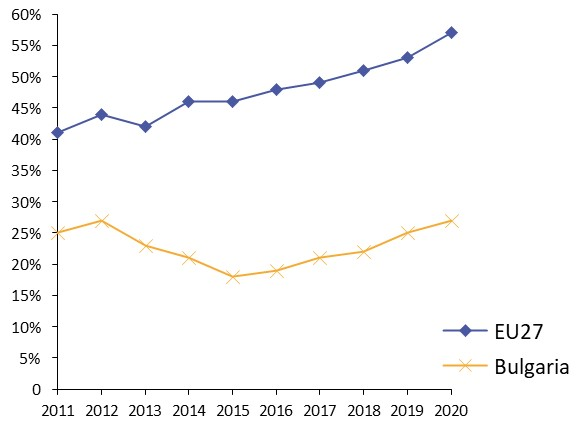
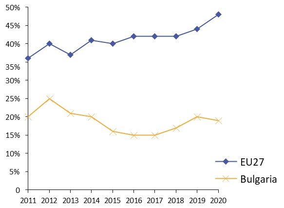
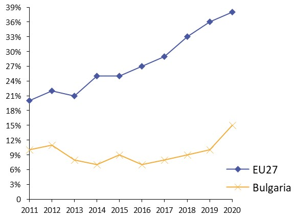
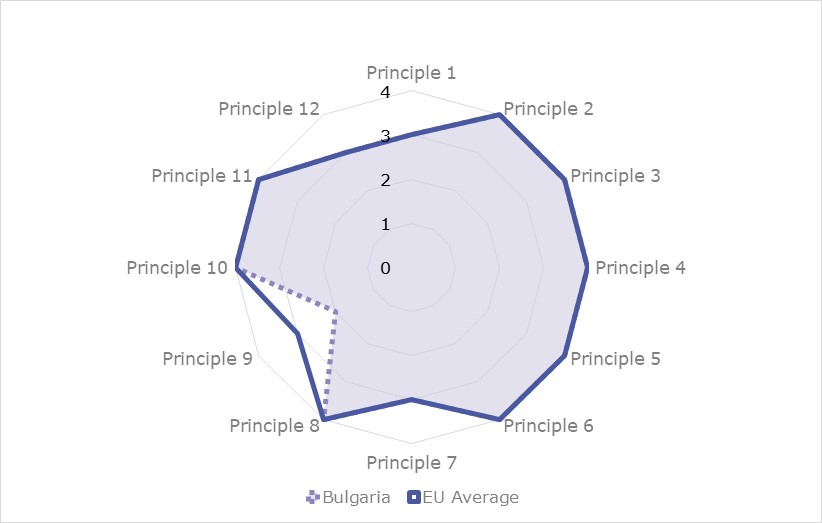
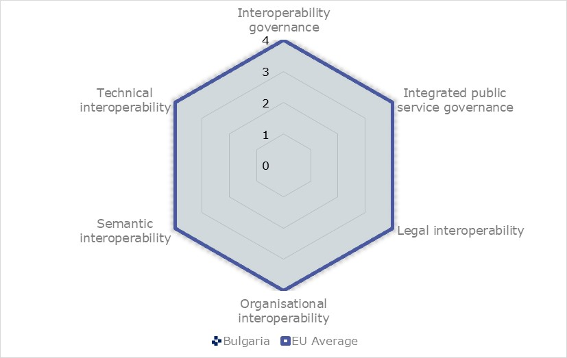
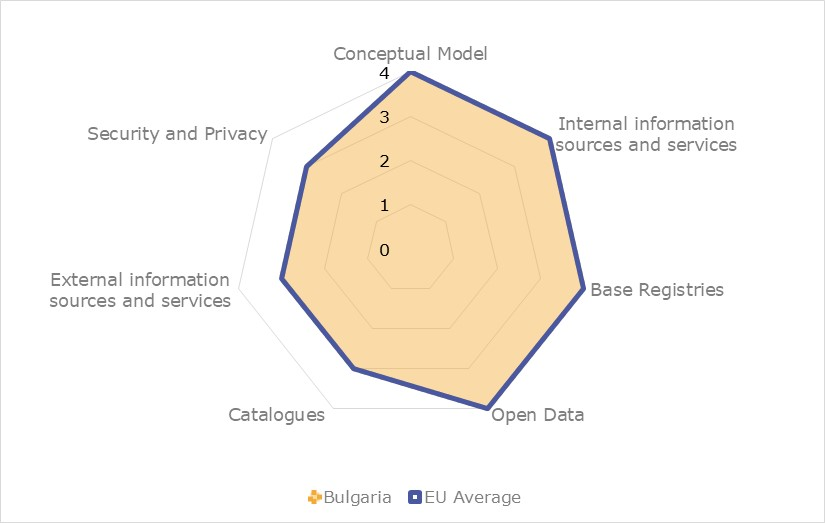

Digital Public Administration factsheet 2021
Bulgaria
Table of Contents
Digital Public Administration factsheet 2021
2 Digital Public Administration Highlights 10
3 Digital Public Administration Political Communications 12
4 Digital Public Administration Legislation 21
5 Digital Public Administration Governance 28
6 Digital Public Administration Infrastructure 35
7 Cross-border Digital Public Administration Services for Citizens and Businesses 43
Please note that the data collection exercise for the update of the 2021 edition of the Digital Public Administration factsheets took place between March and June 2021. Therefore, the information contained in this document reflects this specific timeframe.
Country
Profile
1
Country Profile
Basic data
Population: 6 975 761 inhabitants (2020)
GDP at market prices: EUR 60 642 million (2020)
GDP per inhabitant in PPS (Purchasing Power Standard EU 27=100): 55 (2020)
GDP growth rate: -4.2% (2020)
Inflation rate: 1.2%% (2020)
Unemployment rate: 5.1% (2020)
General government gross debt (Percentage of GDP): 25% (2020)
General government deficit/surplus (Percentage of GDP): -3.4% (2020)
Area: 111.000 km²
Capital city: Sofia
Source: Eurostat (last update: 09 July 2021)
Digital Public Administration Indicators
The following graphs present data for the latest Generic Information Society Indicators for Bulgaria compared to the EU average. Statistical indicators in this section reflect those of Eurostat at the time the Edition is being prepared.
Percentage of individuals using the Internet for interacting with public authorities in Bulgaria | Percentage of individuals using the Internet for obtaining information from public authorities in Bulgaria |
 |  |
Percentage of individuals using the Internet for downloading official forms from public authorities in Bulgaria | Percentage of individuals using the Internet for sending filled forms to public authorities in Bulgaria |
 | |
Interoperability State of Play
In 2017, the European Commission published the European Interoperability Framework (EIF) to give specific guidance on how to set up interoperable digital public services through a set of 47 recommendations. The picture below represents the three pillars of the EIF around which the EIF Monitoring Mechanism was built to evaluate the level of implementation of the EIF within the Member States. It is based on a set of 71 Key Performance Indicators (KPIs) clustered within the three main pillars of the EIF (Principles, Layers and Conceptual model), outlined below.

Source: European Interoperability Framework Monitoring Mechanism 2020

Source: European Interoperability Framework Monitoring Mechanism 2020

Source: European Interoperability Framework Monitoring Mechanism 2020

Source: European Interoperability Framework Monitoring Mechanism 2020
eGovernment State of Play
The graph below presents the main highlights of the latest eGovernment Benchmark Report, an assessment of eGovernment services in 36 countries: the 27 European Union Member States, as well as Iceland, Norway, Montenegro, the Republic of Serbia, Switzerland, Turkey, the United Kingdom, Albania and Macedonia (referred to as the EU27+).
The study evaluates online public services on four dimensions:
- User centricity: indicates the extent to which a service is provided online, its mobile friendliness and its usability (in terms of available online support and feedback mechanisms).
- Transparency: indicates the extent to which governments are transparent about (i) the process of service delivery, (ii) policy making and digital service design processes and (iii) the personal data processed in public services.
- Cross-border services: indicates the extent to which users of public services from another European country can use the online services.
- Key enablers: indicates the extent to which technical and organizational pre-conditions for eGovernment service provision are in place, such as electronic identification and authentic sources.
The 2021 report presents the biennial results, achieved over the past two years of measurement of all eight life events used to measure the above-mentioned key dimensions. More specifically, these life events are divided between six ‘Citizen life events’ (Career, Studying, Family life, measured in 2020, and Starting a small claim procedure, Moving, Owning a car, all measured in 2019) and two ‘Business life events’ (Business start-up, measured in 2020, and Regular business operations, measured in 2019).
Source: eGovernment Benchmark Report 2021 Country Factsheets

Digital Public Administration Highlights
2
Digital Public Administration Highlights
Digital Public Administration Communication
Digital Public Administration Legislation
The amendments to the Electronic Government Act (eGovernment Act) gave additional powers to the Chairman of the State Agency for E-Government to create and maintain a Portal for developers, a national repository, and a system for controlling the versions of the program source code and the technical documentation of the information systems of the administrative authorities.
Digital Public Administration Governance
The State Agency for Research and Innovation was established by Decree № 256 of 14 September 2020 as a specialised body of the Council of Ministers. This Agency deals with the strategic planning, management, financing and management of research and innovation programs and supports structural reforms in these areas.

Digital Public Administration Political Communications
3
Digital Public Administration Political Communications
Specific political communications on digital public administration
- A user-oriented approach and access to all digital services;
- Ethical and socially responsible access, use, sharing and management of data;
- Technology as a key factor; and
- Cooperation with multiple stakeholders.
- Development of a secure digital infrastructure. The implementation of high-capacity networks is paramount in order to create the right conditions for a dynamic economy that supplies innovative services to business operators;
- Access to adequate technological knowledge and digital skills. The lack of competences in information and communication technology (ICT)-related fields as well as the inadequate knowledge possessed by the workforce represents one of the main challenges for the educational system;
- Research and innovation capacity strengthening. Technological advances rely on research and development activities targeting key innovative SMEs;
- Unlocking data potential. The Digital Transformation of the Republic of Bulgaria should be based on a data economy that puts at its centre both privacy issues and data quality. The government will undertake all the steps needed to foster data collection, processing and storage as well as their efficient re-use;
- Digitalisation in favour of a circular and low-carbon economy. The digital transformation should increase the competitiveness of the national economy while fostering the transition to a low carbon footprint; and
- Improving the public administration efficiency and the quality of public services. The development and implementation of interoperable interfaces and data management models contribute to the transition from data to linked data, allowing the public administration to rapidly adapt to the fast-changing digital environment.
- An ultra-high-speed infrastructure – creating conditions for the deployment of networks with very large capacity;
- A broadband infrastructure – accelerating the construction of a broadband infrastructure, accounting for the needs of the State administration;
- The effective use of radio frequency spectrum – creating conditions for building a new generation network;
- The maintenance of coverage in settlements located in peripheral, scarcely populated, and rural areas;
- Promoting the use of digital technologies by providing free internet access; and
- Network security.
Six key priority areas for action have been identified in order to achieve smart, sustainable and inclusive digital growth in the period up to 2025:
- The establishment of appropriate conditions for the development and accessibility of digital networks and services;
- The development of a dynamic and innovative digital economy and the increase of its growth potential;
- The enhancement of digital competences and skills;
- The establishment of effective and high-quality public eServices for businesses, citizens and government;
- The promotion of a secure cyber ecosystem by addressing the challenges of cybersecurity; and
- Internet governance.
- Transforming the model for the provision of user-oriented electronic administrative services, by changing the technological and administrative processes behind them, resulting in a reduction of the administrative burden for citizens and businesses;
- Building a modern digital administration;
- Ensuring a high level of network and information security;
- Establishing high-quality support for shared eGovernment resources.
The strategic goal of the strategy is the complete transformation of administration and public institutions into digital and user-oriented electronic administrative services.
To achieve these strategic goals, an Updated Roadmap for the Period 2019-2023 was adopted, that includes priority measures, responsible institutions and sources of funding. The roadmap has taken a new approach, incorporating measures in the area of justice in order to ensure interoperability, overcoming critical factors and achieving effective and transparent eGovernance. The document includes delayed stage-1 projects from the previous roadmap 2015-2017. A concept for a register reform was adopted as an annex to the strategy. The concept defines goals, principles, scope, reform stages and measures of the existing model.
Architecture of eGovernment
- Digital transformation of civil services;
- Mandatory use of horizontal systems and shared resources of eGovernment by the administrative bodies;
- Setting mechanisms for implementation coordination and control of the architecture;
- Applying unified standards and the principle of interoperability in designing, building, further developing and implementing IT solutions;
- Determining the players in electronic government, their functions, the principles of eGovernment, system requirements and technological architecture;
- Establishing sustainable high level of network and information security;
- Transforming data into information and knowledge; and
- Achieving a high level of trust on the part of citizens and businesses.
The Governance Programme includes the following relevant digital priorities:
- Introduction of a national scheme for eID;
- Further development of basic infrastructure and shared resource of eGovernment;
- Connection of key registers and provision of interoperability for switching to automated/semi-automated exchange of data and electronic documents;
- Provision of network and information security;
- Applying the digital-by-default principle;
- Digitalisation of the most commonly used administrative services; and
- Provision of administrative services related to life events.
Berlin Declaration on Digital Society and Value-Based Digital Government
- In December 2020, the Bulgarian government signed the Berlin Declaration on Digital Society and Value-Based Digital Government, thus re-affirming its commitment – together with other EU Member States – to foster digital transformation in order to allow citizens and businesses to harness the benefits and opportunities offered by modern digital technologies. The Declaration aims to contribute to a value-based digital transformation by addressing and strengthening digital participation and digital inclusion in European societies.
Interoperability
- Contribute to the development of a service-centred community;
- Contribute to greater transparency of information related to political decisions on public information systems;
- Support the joint delivery of services in the public sector;
- Create the conditions for free competition in the development of ICT in the administration;
- Reduce and optimise public sector IT expenses;
- Promote and support the delivery of public services in Bulgaria by fostering cross-border, cross-sector and cross-organisation interoperability; and
- Guide Bulgarian public administrations in their work to provide public services to businesses and citizens.
Reference Architecture for Interoperability and Information System for Centralised Construction and Maintenance of Registers
- In 2020, the State eGovernment Agency began implementing the project on the development and implementation of the Reference Architecture for Interoperability (RAI) and the Information System for Centralised Construction and Maintenance of Registers (ISCCMR). The activities will define and describe elements (architectural building blocks), structured according to the four layers of the OS:
- Legal (legal view);
- Organisational view;
- Technical (technical - application view, technical - infrastructure view); and
- Semantic (semantic view).
- The project will also consider and outline interactions between the different building blocks and the plan for gradual implementation of RAI, as well as the necessary normative changes.
Key enablers
Access to public information
No political communication has been adopted in this field to date.
eID and Trust Services
Introduction of the Cloud Electronic Signature
The National Electronic Identification Scheme provided for in the Electronic Identification Act has not yet been established.
In 2019, the Cloud Electronic Signature was introduced, as a new means of electronic identification in addition to the existing ones (QES, personal identification code of the National Revenue Agency and the National Social Security Institute, unique access code of the National Health Insurance Fund). With the cloud signature, citizens and businesses are able to request the services provided by the administration through a mobile smart device with internet access from anywhere in the world, 24/7, 365 days a year. With it, each user is able to access the Unified Portal for Access to Electronic Administrative Services maintained by the State eGovernment Agency.
In 2019, a project was prepared to build a two-factor authentication system. The project aims at providing an effective and easy way to yield additional security to user identity verification. This code can be sent to a mobile device and be either generated by a specific application, a physical device (token) or other technological means. Using the two-factor authentication system to gain access to the requested administrative service, users must confirm their identity in two steps and via two channels.
The use of a two-factor authentication is a widespread and reliable solution in terms of information security.
Security aspects
Furthermore, the strategy defined the mechanisms for coordination at strategic, political, operational and technical levels, as well as an effective platform for information exchange and collective response. The objectives and measures were defined in nine main areas, as well as the wide application of various forms of public-private partnerships.
Interconnection of base registers
Concept for the Reform of the Registers
By Decision No. 546 of the Council of Ministers of 18 September 2019, the government adopted a Concept for the Reform of the Registers. The concept document will optimise the organisation of the registers in the State administration and will reduce the costs for their maintenance. The final objective will be to ensure official exchange of information and data for the provision of quality services, based on registers from other administrative bodies. While concerning all registers at central and local level, the document did not include in its scope those that contain classified information.
The principles on which the register reform is based are:
- One subject area - one register;
- Application of the Once-Only" principle;
- Digitalisation;
- Functional division;
- Unification of the structure, data format and technological processes;
- Control over own data;
- Open data; and
- Technology neutrality, open source and backup of data.
With Decision of the Council of Ministers No. 298 of April 2, 2021 the updated Concept for register reform was adopted. It has been supplemented with new measures aimed at the digitisation of paper data sets and the optimisation of key registers.
eProcurement
No political communication has been adopted in this field to date.
Domain-specific political communications
eInsurance
In 2019, the government approved the strategy eInsurance 2018-2023 and a roadmap for its implementation. The strategy extends and further expands the Strategy for development of the National Social Security Institute 2018-2021, it outlines technological priorities and determines the approach and principles for their implementation. A detailed roadmap at project level has been developed for the same period to achieve the objectives of the eInsurance Sectoral Strategy.
eCustoms
The eCustoms Sectoral Strategy for the period 2016-2025 outlines the technological priorities for the National Customs Agency to create eCustoms by 2025 and determines the approach and principles for their implementation.
A roadmap 2016-2025 was developed to achieve the objectives of the strategy.
eJustice
eHealth
In December 2020, the government has taken action to draft the National Health Strategy 2021–2030. eHealth represents one of the pillars for the implementation of the strategic goals and priorities of the National Health Strategy 2030. Innovative solutions in the field of eHealth will help to prevent diseases and promote a healthy lifestyle, lead to improvements in the quality of life of citizens while enabling more effective ways of organizing and delivering health services and care.
Emerging technologies
Strategy for the Digitalisation of Agriculture and Rural Areas
The strategy envisages the use of artificial intelligence (AI) to track production, protect against pests, create a continuous farm-to-table chain, and ease the administrative burden for farmers accordingly.
Industry 4.0
One of its priorities is the stimulation of the use of AI technologies in the industry, and particularly by SMEs.
One of the key measures proposed focuses on the development of modern communications and data infrastructure, enabling the development and use of AI, and on supporting the ICT sector to increase its capacity both for offering AI-based applications and solutions on the market, as well as for using AI to increase its own productivity and competitiveness.
Action Plan for Artificial Intelligence in Education and Science
A national scientific programme to support research in the field of AI, intelligent systems and large databases is also being prepared.
The main goal of the concept document is to convey the efforts into the development and implementation of AI systems by creating scientific, business and managerial capacity at the national level. Moreover, the concept document outlines the main steps ahead to provide a modern communication and scientific infrastructure for the development of new generation digital technologies. The document also identifies the need to improve the lifelong education and training system. In the future, AI will support the development of research and innovation activities in key sectors. Furthermore, the document outlines the introduction of an ethical and legal regulatory framework as a key milestone to ensure broad public trust.

Digital Public Administration Legislation
4
Digital Public Administration Legislation
Specific legislation on digital public administration
eGovernment Act
The eGovernment Act was amended in 2019 to reinforce the control functions of the State eGovernment Agency and to transpose Directive (EU) 2016/2102 of the European Parliament and of the Council (of 26 October 2016) on the accessibility of the websites and mobile applications of public sector bodies.
The amendments to the Electronic Government Act (eGovernment Act) gave additional powers to the Chairman of the State Agency for eGovernment to create and maintain a Portal for developers, a national repository, and a system for controlling the versions of the program source code and the technical documentation of the information systems of the administrative authorities.
Another significant addendum is the regulation on the solutions for electronic identification (eID) and the procedure for their acknowledgement, as well as the establishment and support of an electronic authentication information system, in order to guarantee the validity of the exchanged electronic documents and statements.
The eGovernment Act entered into force on 13 June 2008 and defined arrangements for the handling of electronic documents by administrative authorities, the provision of administrative services by electronic means and the circulation of electronic documents among various administrations. Its scope also extended to other entities that carry out public functions and to public service providers.
Under one of the act’s main provisions, administrative bodies and persons charged with public functions, as well as organisations providing public services, cannot require citizens and organisations to produce or to prove data which have already been collected or created. Such data must be collected by the afore-mentioned bodies and persons from the initial data administrator. Another important provision stated that public bodies provide administrative services electronically.
The eGovernance Act, amended in June 2016, introduced a new State eGovernment Agency (SEGA) which integrated the Electronic Governance Directorate of the Ministry of Transport, Information Technologies and Communications and the Executive Agency for Electronic Communication Networks and Information Systems.
Some of the articles in the eGovernment Act have incorporated mandatory requirements for the preparation of terms of reference (ToR), listing the requirements that administrative authorities must include in the preparation of technical and functional assignments for public procurement, related to the development, upgrade or implementation of information systems or electronic services.
Interoperability
eGovernment Act
The eGovernment Act and its existing regulatory framework set the requirements for the provision of internal electronic administrative services and the exchange of electronic documents among administrative authorities under the conditions of interoperability as well as the requirement of uniform standards and rules and semantic interoperability. These requirements for the provision of internal electronic administrative services also applied to public service providers and to public service organisations, unless otherwise provided by law. The Chair of the SEGA shall ensure the integration of the information systems of the administrative bodies with those of the Member States of the European Union, so as to enable the provision of cross-border electronic administrative services.
Key enablers
Access to public information
Access to Public Information Act
The Access to Public Information Act, in force since 2000, regulates public relations concerning the right of access to public information, as well as the reuse of public sector information.
The law was amended in 2007 with the transposition of Directive 2003/98/EC on the re-use of public sector information and in 2016 with the transposition of Directive 2013/37/EC, amending Directive 2003/98/EC on the re-use of public sector information.
The law establishes standard terms and restrictions on the provision of information from the public sector for re-use, as well as administrative penalties.
The law gives all citizens or legal entities the right to access information held by government institutions, regardless of the way of storage. Access is provided through the Public Information Access Platform. The law regulates transparency in the work of the administration, introduces the obligation to offer information re-use, as well as proactive, scheduled annual information publishing in an open format of all data and resources, maintained on the free-access Open Data Portal.
Protection of Personal Data Act
The Bulgarian Personal Data Protection Act (PDPA) was amended on 21 February 2019. The amended PDPA entered into force on 1 March 2019.
The main purpose of the amendments to the Protection of Personal Data Act is to ensure the effective implementation of the European Union's new legal framework on data protection, namely Regulation 2016/679/EU of the European Parliament and of the Council of 27 April 2016 on the protection of natural persons with regard to the processing of personal data and on the free movement of such data, also known as GDPR.
A major change is the introduction of the principle of accountability and the upgrading of the requirements for business, public authorities, and any person who processes personal data. Accountability requires active action on the part of the controllers to comply with the principles and rules for the processing of personal data at all stages of their activities and to demonstrate compliance with these rules to the supervisory authority.
The scope of the term personal data is expanding: a person’s digital identity (social networking, e-mail, location) and traffic (including GPS coordinates, IP address) are already accepted as personal data.
Particular attention is paid to special (sensitive) categories of personal data - health and mental status, genetic data, beliefs, ideas, racial and ethnic origin, etc. Under certain conditions, the appointment of a Data Protection Officer (DPO) is required.
The rights of data subjects have been expanded, including the right to be forgotten upon expiration, withdrawn consent, accomplished primary purpose for which they were collected, etc. In addition, the transparency of the processing and the associated obligation to provide brief and comprehensible information to the data subjects that are being processed should also be considered.
eID and Trust Services
Electronic Document and Electronic Trust Services Act
This act regulated the electronic document and the electronic trust services.
Bulgaria amended the Law on Electronic Document and Electronic Signature in 2017 to:
- Create the conditions for a comprehensive cross-border and inter-sector framework for secure, reliable, and easy to use electronic transactions in the internal market;
- Create the conditions to develop digital infrastructure to improve the quality of public services, which would facilitate cross-border access to businesses and citizens within the EU and from other leading countries in the field of eGovernment;
- Ensure a fruitful European collaboration promoting innovation and the exchange of best practices as to the implementation of cross-border services, and synchronisation with European initiatives and programmes relating to eGovernment; and
- Build trust in the online environment, which is a key factor for economic and social development. A lack of confidence in the online environment discourages citizens and public authorities from carrying out electronic transactions and electronic service delivery.
The amendments to the Law on Electronic Document and Electronic Signature aimed to ensure that national legislation relating to the provision of electronic certification services complied with European legislation and in particular Regulation (EC) 910/2014 of the European Parliament and the Council of 23 July 2014 on the electronic identification and trust services for electronic transactions in the internal market, repealing Directive 1999/93/EC (Commission Regulation (EU) 910/2014). In view of the direct applicability of the regulation, it provided for the repeal of provisions relating to elements of the system that are specifically regulated by the act of the European Union.
With the entry into force of the new amendment, a qualified electronic signature has the legal effect of a handwritten signature, while simple and advanced electronic signatures may be recognised as handwritten signatures.
Electronic Identification Act
A new Electronic Identification Act was adopted in May 2016 and came into force on 21 November 2016. In addition, amendments to the law on national identification documents were introduced. This is a key step for the accelerated introduction of eGovernment, as it defines a unified scheme for electronic identification of citizens and businesses.
eSignature in the eGovernment Act
Article 31, Section II of the eGovernment Act regulates the use of the electronic signature for eGovernment application. The Electronic Document and Electronic Trust Services Act regulated the electronic document and the electronic trust services by defining an electronic signature in the meaning of Art. 3, par. 10 of Regulation (EC) 910/2014; Enhanced electronic signature is an electronic signature within the meaning of Article 3(11) of Regulation (EC) 910/2014; qualified electronic signature is an electronic signature within the meaning of Article 3(12) of the same Regulation. In particular, the rules to obtain, use, renew and revoke electronic signature certificates in administrations are settled in the Ordinance on Electronic Signature Certificates in Administrations.
Security aspects
Cybersecurity Act
The Cybersecurity Act, published in the Bulgarian State Gazette No. 94 of 12 November 2018, was adopted in accordance with the commitments of the Republic of Bulgaria as a Member State of the European Union, which had to introduce into its national legislation provisions by 09 May 2018 and establish an organisation for the implementation of the Directive (EU) 2016/1148 of the European Parliament and of the Council of 6 July 2016 concerning measures for a high common level of security of network and information systems across the Union (ОJ, L 194 of 19 July 2016).
Ordinance on Minimum Requirements for Network and Information Security
In 2019, a new Ordinance on Minimum Requirements for Network and Information Security entered into force. It repealed the existing Ordinance on General Requirements for Network and Information Security. Its adoption enhances the regulatory framework in the field of network and information security in accordance with the Cybersecurity Act.
The ordinance defines the network and information security principles and goals. Requirements have been set for organisational measures for the protection of networks and information systems, as well as the related information covered by the Cybersecurity Act.
The Ordinance also recommends proceedings, establishes rules for the performance of compliance checks, defines the procedure for keeping, storing and accessing a Register of Essential Services. Standardised forms for incident notifications and a form for aggregated incident statistics pursuant to the Cybersecurity Act are introduced and the taxonomy and prioritisation in this area are harmonised.
Following the ordinance, three key cybersecurity projects were initiated in 2019.
- The Project on Building Components of the National Cyber Security System concerned the establishment, among others, of a National Cyber Security Coordination and Organizational Network, a National Cyber Situation Centre, a National Cybercrime Centre, a National Computer Security Incident Response Team, and the upgrade of the Centre for Monitoring and Response to Incidents with Significant Impact on Communication and Information Systems of Strategic Objects and Activities Important for National Security at the State Agency for National Security (SANS).
- The Project on Capacity Building and Services Enhancement of CERT Bulgaria (CBSEC-BG) included activities such as the setup of a Centre for National and International Cyber Exercises, the creation of a Malware Analysis Laboratory, and the setup of a Forensic Analysis Laboratory.
- The FORESIGHT project aims to develop a federated cyber-range solution to enhance the preparedness of cyber security professionals at all levels and advance their skills towards preventing, detecting, reacting and mitigating sophisticated cyberattacks.
Law on the Protection of Personal Data
Adopted in January 2002 and last amended in May 2018 due to the GDPR, the Law on the Protection of Personal Data was modelled on EU Directive 95/46/EC on the protection of natural persons with regard to the processing of personal data and on the free movement of such data. It applied to the protection of individuals with regard to the processing of personal data, granting them the right to access and correct information about them held by public and private bodies. It defined lawful grounds for the collection, storage and processing of individual personal data.
The implementation of the law is monitored by the Commission for Personal Data Protection, an independent supervisory authority.
Interconnection of base registers
Central Component
In Bulgaria, all primary registers are created and maintained on grounds stipulated by law. Pursuant to the Ordinance on the General Requirements for Information Systems, Registers and Electronic Administrative Services adopted in 2017, access to registers can be done directly, or through a central component that ensures compliance with the interoperability and data exchange requirements, and that meets the requirements, determined by the Chair of the State eGovernment Agency. The central component, including the rights to access resources through it, is managed by the Chair of the State eGovernment Agency.
Commercial Register and Register of Non-Profit Legal Entities Act
The Commercial Register and Register of Non-Profit Legal Entities Act regulates the registration, keeping, storage and access to the Commercial Register and Register of Non-Profit Legal Entities, as well as the status of entries, deletions and announcements therein.
The Act also identifies the data owner as well as the ways to ensure security, interoperability and free access to data. The Commercial Register and Register of Non-Profit Legal Entities register is a unified electronic database containing the circumstances and acts disclosed by law concerning companies and branches of foreign companies, non-profit legal entities and the branches of foreign non-profit legal entities.
Cadastre and Property Register Act
The Cadastre and Property Register Act provides a definition of how cadastre and property are understood in the Bulgarian context, and regulates the organisation, financing, development, maintenance and use of the registers. Additionally, the act recognises and defines the difference between the Cadastre and the Land Register: the Cadastre is the set of basic data on the location, boundaries and dimensions of real estate in Bulgaria, while the Land Register consists of the batches of real estate, which allow for the establishing, transferring, amending or terminating of any real rights on real estate.
Civil Register Act
The Civil Register Act regulates and defines the purposes of civil registration. It contains reference data indicating the subject of the entries, as well as the events that led to the entry in the civil registration. The main events in this case are birth, marriage, and death. In addition, the most important basic data entered in the civil register refer to the name, date and place of birth, gender, citizenship as well as the unified citizen number that is provided to Bulgarians and residents.
Register BULSTAT
BULSTAT is the Unified Register for Identification of Economic and Other Subjects. The Law on the BULSTAT register of 27 April 2005, and the ensuing adoption of a government strategy for the actual establishment of a central register of legal entities, and of an electronic register of Bulgaria, were aimed to unify the registration of businesses with the Register Agency under the Ministry of Justice. This was done to turn business registration from a court procedure into a purely administrative one, introducing a single BULSTAT number for tax and social security purposes.
eProcurement
Public Procurement Act
In April 2016, a new Public Procurement Act entered into force in Bulgaria. The law contained regulations covering the different sub-phases of eProcurement, such as: eNotification, eTendering, eAuctions and the Dynamic Purchasing System.
It fully complies with Directive 2014/24/EC of the European Parliament and the Council on Public Procurement.
The latest amendment of the Public Procurement Act entered into force on 1 March 2019 and was published in the State Gazette No. 86 of 18 October 2018. From 1 November 2019, the provisions foresee the mandatory use of the National Electronic Platform (CAIS EOP) from the opening of the procedures to the receipt and opening of the electronic applications for participation and tenders, as well as for the electronic communication in the course of the procurement procedure. Before that date, trainings, testing and registration of users in the platform were carried out in order to smoothly change over to eProcurement.
The implementation of the platform will take place in two stages. It will be fully completed with all functionalities by the end of 2020. The rules on the introduction of all of the platform's functionalities will start to apply from 1 January 2021.
eInvoicing legislation
Amendments to the Public Procurement Act also concern electronic invoices. In the case of payments under public procurement contracts, contracting authorities are obliged to accept and process electronic invoices, provided their content meets the requirements of the Value Added Tax Act. Invoices must comply with the European electronic invoicing standard approved by the Commission Implementing Decision (EU) 2017/1870 of 16 October 2017 on the publication of the reference of the European standard on electronic invoicing and the list of its syntaxes pursuant to Directive 2014/55/EU of the European Parliament and of the Council or an equivalent standard with which it is implemented.
Domain-specific legislation
eCommerce Act
The eCommerce Act was enacted in Parliament in December 2006 to implement the EU Directive on electronic commerce (2000/31/EC). It regulated the obligations of service providers with regard to contracts by means of eDevices, and stipulated the rules limiting the service providers’ responsibilities as to the provision of access and transfer of information services. It introduced a definition of spam mail, as well as the development of a specialised register of email addresses of legal entities who do not wish to receive such messages.
In February 2019, the Bulgarian government amended the act allowing the user of the information society service to receive clear and detailed information in accordance with Article 13 of Regulation (EU) 2016/679 of the European Parliament and of the Council of 27 April 2016 on the protection of individuals with regard to the processing of personal data and on the free movement of such data and repealing Directive 95/46/EC (General Data Protection Regulation).
In November 2020, additional amendments expanded the range of information society services included in the act. Information society services are also intermediary online services within the meaning of Regulation (EU) 2019/1150 of the European Parliament and of the Council of 20 June 2019 on promoting justice and transparency for business users of online intermediary services (OJ L 186 / 57 of 11 July 2019), hereinafter Regulation (EU) 2019/1150.
Emerging technologies
No political communication has been adopted in this field to date.

Digital Public Administration Governance
5
Digital Public Administration Governance
National
Policy
Ministry of Transport, Information Technology and Communications
The Ministry of Transport, Information Technology and Communications (MTITC) is responsible for the implementation of the State policy on the information society development and for the definition of the legal framework needed to provide an effective environment for ICT development.
The Ministry is responsible for creating an environment for building modern, secure and widely available ICT infrastructure and for developing ultra-high-speed broadband. The MTITC is the institution that coordinates effective policies in the areas of internet governance, free movement of data, digital infrastructure, etc.
Georgi Todorov Minister for Transport, Information Technology and Communications Contact details: Ministry for Transport, Information Technology and Communications 9, Dyakon Ignatiy str. 1000 Sofia Bulgaria E-mail: mail@mtitc.government.bg Tel.: +359 2 940 97 71 Source: http://www.mtitc.government.bg/ |
State eGovernment Agency
The State eGovernment Agency (SEGA), under the Council of Ministers, was established pursuant to the Electronic Government Act (published in the State Gazette, Issue No. 50 of 2016). The Agency was established as an independent entity funded with the State budget and based in Sofia. The Chair of the State eGovernment Agency is chosen by resolution of the Council of Ministers and appointed by the Prime Minister for a period of five years.
The Agency is the successor of the Electronic Government Directorate, under the Ministry of Transport, Information Technologies and Communications, and the Executive Agency on Electronic Communication Networks and Information Systems.
The SEGA performs a series of activities such as: issuing and introducing control-related policies, rules, regulations and good practices in the field of electronic government; strategic planning and initiatives; budget planning and control; and coordinating sector-related policies and interdepartmental projects. The Agency also maintains central registers to meet the electronic government requirements and needs, as well as other central registers, a private cloud and a communication network of the State administration.
Krasimir Simonski Chair of State eGovernment Agency Contact details: State eGovernment Agency 6, Gurko str. 1000 Sofia Bulgaria E-mail: ksimonski@e-gov.bg Tel.: +359 2 949 21 15 Source: https://e-gov.bg |
State Agency for Research and Innovation
The State Agency for Research and Innovation was established by Decree No. 256 of 14 September 2020as a specialised body of the Council of Ministers. This Agency deals with the strategic planning, financing and management of research and innovation programmes and supports structural reforms in these areas. It represents a new policy stream that aims to maximise the effectiveness of activities related to the transition into a knowledge, innovation and technology-based economy. The Agency is the managing body of the national programme for research, innovation and digitalisation.
Coordination
Ministry of Transport, Information Technology and Communications
The Ministry of Transport, Information Technology and Communications (MTITC), through the Information Technologies Directorate, has competence over coordination activities related to data free flow, data economy, and information society. The Ministry is also responsible for creating an environment for building a modern, secure and widely available digital infrastructure and developing ultra-high-speed broadband.
Council for Administrative Reform
The Council for Administrative Reform coordinates the government policy for the general management of the State administration.
State eGovernment Agency
The State eGovernment Agency (SEGA) performs a series of activities such as: issuing and introducing control-related policies, rules, regulations and good practices in the field of electronic governance; strategic planning and initiatives; budget planning and control; and coordinating sector-related policies and interdepartmental projects. The Agency also maintains central registers to meet the electronic governance requirements and needs, as well as other central registers, a private cloud and a communication network of the State administration.
Council for eGovernment
Until 2016, the Council for eGovernment assisted Ministers in the implementation of eGovernment policy, coordinated the implementation of draft sectoral eGovernment strategies and/or programmes in the context of the overall eGovernment strategy, and coordinated programme budgets and proposals for updating the overall eGovernment development strategy.
A new Electronic Governance Council, an advisory body to the SEGA, was formed in 2017, and changes were made to its functions and composition.
Business Council for Assisting Experts
A Business Council for assisting experts has been established within the eGovernment Council (eGC) to support the Council of Ministers in implementing eGovernment policies, assist the eGC in coordinating strategic documents and policies in the field of eGovernment, and to participate in the coordination of proposals for updating the eGovernment strategy.
Cybersecurity Council
With the Cybersecurity Act, a Cybersecurity Council was established with advisory, coordination and control functions on the development and implementation of cybersecurity policies within the Council of Ministers. For the functioning of the Cybersecurity Council, a Decree of the Council of Ministers was adopted, regulating its organisation and activities.
The Cybersecurity Council assists the government in performing its cybersecurity organisation, management and control tasks, which include network and information security, cybercrime and cyberdefence.
The Council includes the Ministers for Interior, Defence, Foreign Affairs, Finance, Transport, Health, Environment, Energy, the Chief of Defence, the Secretary General of the Ministry of Interior, the President of the State Agency for National Security (SANS), the Chair of the State Intelligence Agency (SIA), the Chair of the State eGovernment Agency, the Secretary of the Cybersecurity Council within the Council of Ministers, and a representative of the President.
The Head of State, the Prime Minister and the Parliament Chair may participate in propria persona in the Cybersecurity Council. In certain cases, chairs of standing committees of the National Assembly, members of Parliament, heads of institutions and organisations may also participate.
The above-mentioned composition on one hand guarantees the necessary involvement at political level and, on the other, creates the right conditions for the Council to operate effectively.
With a Prime Minister's Order, the Deputy Prime Minister for Economic and Demographic Policy was appointed Chair of the Cybersecurity Council. The Cybersecurity Council will hold regular meetings at least once a year, with the option of additional ad-hoc meetings. Representatives of various State bodies and of professional and civic organisations, as well as experts, may be invited to attend the Council meetings.
Inter-Institutional Spatial Data Council
The Geospatial Data Act regulates the structure and tasks of the Inter-Institutional Spatial Data Council. The Council includes members, appointed by executive authorities, who are primary spatial data controllers. The Chair of the Council is the Chair of the State eGovernment Agency (SeGA) or an authorised official, and the Deputy Chairs are the Deputy Minister for the Environment and Waters and the Deputy Minister for Regional Development and Public Works, or their duly authorised officials. The functions and activities of the Inter-Institutional Spatial Data Council (ISDC) are regulated by the rules of procedure, structure and organisation of the ISDC. Information about the ISDC is also published on the Council of Ministers Advisory Councils portal. The Council is supported by an expert working group and other relevant working subgroups on the topics of environment, transport and statistics.
Implementation
Government Ministries and Bodies
Government ministries and bodies are responsible for the implementation of departmental eGovernment projects falling within their respective areas of competence.
State eGovernment Agency
The State eGovernment Agency (SEGA) performs a series of activities such as: issuing and introducing control-related policies, rules, regulations and good practices in the field of electronic government; strategic planning and initiatives; budget planning and control; and coordinating sector-related policies and interdepartmental projects.
The Agency also maintains central registers to meet the electronic government requirements and needs, as well as other central registers, a State private cloud and a communication network of the State administration.
Support
State eGovernment Agency
The State eGovernment Agency (SEGA) supports the administrative units engaged in the implementation of IT and communication technologies by providing guidelines. It also supports IT development with regard to the effective interaction among the various administrative structures and the development of digital content in accordance with the eGovernment Act.
The SEGA also provides consulting services to institutions on the development and implementation of national strategies in the ICT field.
National Computer Security Incidents Response Team
Institute of Public Administration
Interoperability coordination
State eGovernment Agency
The State eGovernment Agency (SEGA) is the main body responsible for interoperability activities in the country.
Base registry coordination
Central Coordination
The administration of the specific base registers takes place at national level through their respective ministries/authorities. Coordination and sharing activities between base registers are conducted both at central level as well as decentralised levels.
For some registers, data is gathered through local offices and forwarded to the national registers. This is evident for the Civil Register, for which data is gathered and administered through local municipal offices.
Audit
State eGovernment Agency
According to the Electronic Governance Act, the SEGA is responsible for verifying whether the information systems implemented by the administrative bodies comply with the established regulatory requirements for interoperability and the mandatory requirements for assignments preparation. The law empowers the Agency Chair to create and maintain an information system for preliminary, ongoing and ex-post controls as deemed appropriate for the field of eGovernment and to use information and communication technologies in the activity of the administrative bodies and their administrations. Within the budgetary process, all administrative bodies are required to get from the Chair of the Agency an approval of the costs for eGovernment and information and communication technologies.
Data Protection
Commission for Personal Data Protection
The Commission for Personal Data Protection is an independent State body responsible for supervising the observance of the Law for Protection of Personal Data and protecting individuals with regard to the processing of their personal data, while also providing access to these data.
Subnational (federal, regional and local)
Policy
State eGovernment Agency
The State eGovernment Agency (SEGA) has controlling and analytical functions over the investment programmes concerning the Single Electronic Communication Network (UECN) of the State administration.
Coordination
Municipalities
Implementation
Regions and Municipalities
Regions and municipalities are involved in the implementation of various eGovernment activities of local interest. More specifically, they conduct activities related to the delivery of electronic services by providing horizontal components. These include eDelivery, ePayment, and eForms for requesting eServices. They also provide the ensured opportunity for administrations to join the single model for requesting, paying for and providing electronic administrative services.
Support
State eGovernment Agency
The State eGovernment Agency (SEGA) assists the municipal administrations methodologically in the implementation of the Law on Electronic Governance. The State eGovernment Agency provides the structure of the central and local administration through three types of infrastructure services: communication with a single electronic communications network; communication and information infrastructure as a cloud service in the country; and communication and information management of the SEGA data centre. Almost all agencies in the existing administration, as well as many local administrations, are users of these services.
Interoperability coordination
No responsible organisation has been reported to date.
Base registry coordination
Local Office Coordination
Coordination and sharing activities between base registers are concluded both at central level and decentralised levels.
For some registers, data is gathered through local offices and forwarded to national registers, as is the case for the Civil Register, where data are gathered and administered through local municipal offices.
Audit
Data Protection
Commission for Personal Data Protection
The Commission for Personal Data Protection also oversees the compliance with the Law for Protection of Personal Data by the local self-government authorities.
Digital Public Administration Infrastructure
6
Digital Public Administration Infrastructure
Portals
National Portals
Open Data Portal
Since the beginning of 2019, administrations have been publishing their datasets on the new Open Data Portal. The portal is a single, central, public web-based information system that provides for the publication and management of re-usable information in an open, machine-readable format along with the relevant metadata. Publication of public sector information in an open machine-readable format is an obligation for public sector organisations. The portal publishes data from national, regional and municipal levels. Citizens too have the opportunity to publish information.
The Open Data Portal has been developed on a PHP platform with the goal of improving processes related to the provision, access and reuse of public sector information financed by the Good governance operational programme.
Public Consultations Portal
Platform for Publicly Available Information
In 2019, the new online platform for accessing publicly available information was launched, enabling citizens and legal entities to easily obtain the public information they require. It is a unified, centralised, public web-based information system that provides the entire process of filing and reviewing an application for access to information online, referencing jurisdiction and, if necessary, providing a decision and publishing relevant information from the persons as required under the Access to Public Information Act, subject to the protection of the applicants’ personal data under the Personal Data Protection Act.
Public Procurement Portal
The Public Procurement Portal (PPP) provides access to information on different aspects of public procurement. The information is structured in specific thematic areas and geared to the specific interests of major user groups. The information is updated daily.
The Public Procurement Portal provides access to:
- The Public Procurement Register;
- Methodological guidelines for the implementation of the PPL;
- Samples of documents that contracting authorities use when awarding public contracts;
- A list of contracting authorities;
- A list of economic operators registered as contractors;
- A list of economic operators who are unsuitable participants;
- Results of public procurement monitoring;
- Results of controls exercised by the PPA; and
- The monthly bulletin for the public procurement market in Bulgaria.
Portal for Developers
The portal provides and manages access to resources for the development of eGovernment software systems, information and communication technologies and the implementation of electronic services, which will enable the re-use of already existing software codes and components and/or the accumulated knowledge in new eGovernment software systems development. The portal is intended for administrations and software systems developers.
Portal for Public Consultations
Subnational portals
Unified Portal for Access to Electronic Administrative Services (UPAEAS)
The Unified Portal for Access to Electronic Administrative Services (UPAEAS) constitutes an entry point for the provision of services, offering a secure and convenient channel for accessing and communicating with consumers (citizens and businesses) of electronic administrative services. On the portal, users can identify themselves, receive information about services, and send applications for eServices through a specialised user interface.
Local Municipalities Portals
- Local authority bodies (municipalities) build and maintain their own portals for information and the provision of services (i.e. the Sofia Municipality Portal).
Networks
Unified Communications Network
The government adopted a plan for the technological, administrative and financial integration of the Electronic Communications Network and the National Network of Public Administration. Both constitute the backbone for the implementation of the provisions for digital transmission needs of public institutions as a Unified Communications Network. Responsibility for the management of the merged network resides with the SEGA.
The Public Administration, by building a unified communications network, sees an opportunity to effectively reduce the cost of central and local executive authorities for telecommunications services and operational costs. This will facilitate the transfer of funds for the infrastructure development, maintenance and operation.
The government aims to create a single public communication and information infrastructure that will enable the country to: introduce eGovernment; apply video surveillance in public places, intersections, important buildings and schools; and provide eLearning, eAgriculture, eCommerce, eHealth, eTourism and eInclusion to disadvantaged people.
The decision to build a national Unified Electronic Communications Network (UECN) was adopted on 10 December 2006. The UECN is built on two levels - the backbone network (Backbone) and the access networks (Metromrezhi).
In August 2003, the backbone of the public administration communication system was the National Network of the Public Administration (NNPA). At that time, it comprised 27 regional networks of the public administration based on regional cities.
The NNPA was planned to be merged with the MPD, the data network of the Ministry of Finance, and then connected to the EU’s TESTA II private IP-based network.
The NNPA and UECN networks were merged under the unified Single Electronic Communication Network in 2011. Its maintenance is under the competence of the State eGovernment Agency, Directorate of Information and Communications Infrastructure.
Data Exchange
Register Information Exchange System
Following Decision No. 338 of 23 June 2017, the Council of Ministers took measures to reduce the administrative burden on citizens and businesses by removing the requirement to submit certain official documentary evidence in paper form. In order to issue certificates, administrations make queries from registers, and the data is retrieved by the administrations electronically. The provision of these services is achieved via the Register Information Exchange System (RegiX). It is an environment for automated interconnections between registers. With RegiX, authorised information users can retrieve data automatically from basic registers such as the National Population Database, the BULSTAT Register, the Property Register, the Commercial Register. The environment is managed by the SEGA.
In October 2020, RegiX was upgraded. The upgrade introduced a new functionality consisting of the verification of the extracted information of each administration connected using electronic printing. Furthermore, RegiX provides its users with asynchronous retrieval of data in case the retrieval information is not in a machine-readable format, allowing connection of non-automated registers to the system.
Electronic Information System for Civil Registration and Administration
The Electronic Information System for Civil Registration and Administration (CRAS) is a system operated by the Directorate General for Citizens’ Registration of the Ministry of Regional Development and Public Works that offers services related to citizens' personal IDs, data submission to statistical offices and generalised data related to the number of citizens residing in a given region, city or municipality.
eDelivery
The eDelivery System allows to send, receive and store electronic documents for/from public authorities, citizens and legal entities. eDelivery is an electronic equivalent to registered mail with a return receipt and is provided in accordance with Article 43 of the Regulation (ЕС) No. 910/2014 and Article 26(2) and 26(4) of the EGA.
All administrative authorities can integrate the eDelivery module into their information systems or use it via a user interface.
With Decision No. 357 of 29 June 2017, the Council of Ministers obliged administrative authorities to bring their electronic document exchange systems in line with a uniform technical protocol approved by the Chair of the State eGovernment Agency. Since 1 November 2018, all administrations are obliged to exchange documents only by electronic means.
State Hybrid Private Cloud
It will also enable a rapid, secure, flexible and cost-effective way to provide resources in the form of cloud services for the needs of citizens and businesses, for in-house information and communication service processes, projects and systems and for maintaining and developing nationally significant electronic information arrays and databases.
eID and Trust Services
Biometric Passport
eSignature
The electronic signature certificate enables several eServices, including: online payment of duties and taxes; customs and tax declarations filing; access to commercial registers; eCommerce; authorised access to confidential information; and electronic signing of documents/contracts. Furthermore, it reduces both costs and time for interacting with governmental bodies.
eProcurement
Public Procurement Register
eSender Sservice
Tendering procedures above a certain threshold are published in the Official Journal of the European Union (OJ). The PPA provides the eSender service for contracting authorities free of charge, which enables the automatic forwarding of relevant tenders to the OJ. It offers a centralised electronic service through which tenders may be submitted on all publication platforms, thus eliminating the need to submit the same notice several times.
eInvoicing platform
ePayment
Electronic Payment Gateway
Since 2018, an electronic payment environment has been in place for electronic administrative service providers. It is accessible via the Electronic Payment Gateway.
The electronic payment environment records electronic payments related to the provision of electronic administrative services, creates electronic payment documents and provides for the possibility of paying them in the mode chosen by consumers.
Knowledge Management
Platform for Publicly Available Information
In 2019, the new online platform for accessing publicly available information was launched, enabling citizens and legal entities to easily obtain online the public information they require. It is a unified, centralised, public web-based information system that provides the entire process of filing and reviewing an application for access to information online, referencing jurisdiction and, if necessary, providing a decision and publishing relevant information from the persons as required under the Access to Public Information Act, subject to the protection of the applicants’ personal data under the Personal Data Protection Act.
Project Source Repository
Under the Electronic Governance Act, administrative authorities use a public repository for the development, upgrading or deployment of information systems or electronic services and a control system for the source code and technical documentation versions. The storage of projects – or parts thereof – designed for custom-made administration is hosted on GitHub. Access to the GitHub repository is ensured upon submission of an electronically signed application form to the SEGA by the administrative authority. Since 2020 a new GitHub repository is available. The old repository stores a mirror copy of the contents of the new one.
VAT Public Bulletin
GDPR in Your Pocket
Cross-border platforms
eIDAS Node
For the purposes of cross-border electronic identification, an eIDAS Node has been developed and deployed in a production environment in accordance with the requirements of Regulation (EC) No. 910/2014.
The technical specifications provided by the European Commission have been reused for its development. The node is currently being tested for conformity with the technical specifications (by means of European Commission testing tools) and phase by phase it is being connected and tested with the nodes of the other Member States. At national level, the eIDAS Node is completely integrated with the eAuthentication system, developed and maintained by the State eGovernment Agency.
Electronic Exchange of Social Security Information
The Electronic Exchange of Social Security Information (EESSI) is an IT system that helps social security institutions across the EU exchange information more quickly and securely, as required by EU rules on social security coordination. Since January 2020, the National Social Security Institute (NSSI) has effectively joined the EESSI. The NSSI has started to exchange data electronically with other social security institutions in Europe regarding all benefits within its competence.
Secure Platform for the Electronic Exchange of Data
To exchange pension information with Germany, the National Social Security Institute (NSSI) uses a Secure Platform for the Electronic Exchange of Data (sPAD), provided by the Data Processing Centre of the DSRV (German pension insurance bodies). This web application is accessible through the European network TESTA. The NSSI has excess to the Pension Payment List and the List of Death Certificates via sPAD.
Base registries
RegiX
Emerging Technologies
No infrastructure in this field has been reported to date.
Cross-border
Digital Public Administration Services
7
Cross-border Digital Public Administration Services for Citizens and Businesses
Further to the information on national digital public services provided in the previous chapters, this final chapter presents an overview of the basic cross-border public services provided to citizens and businesses in other European countries. Your Europe is taken as reference, as it is the EU one-stop shop which aims to simplify the life of both citizens and businesses by avoiding unnecessary inconvenience and red tape in regard to ‘life and travel’, as well as ‘doing business’ abroad. In order to do so, Your Europe offers information on basic rights under EU law, but also on how these rights are implemented in each individual country (where information has been provided by the national authorities). Free email or telephone contact with EU assistance services, to get more personalised or detailed help and advice is also available.
Please note that, in most cases, the EU rights described in Your Europe apply to all EU member countries plus Iceland, Liechtenstein and Norway, and sometimes to Switzerland. Information on Your Europe is provided by the relevant departments of the European Commission and complemented by content provided by the authorities of every country it covers. As the website consists of two sections - one for citizens and one for businesses, both managed by DG Internal Market, Industry, Entrepreneurship and SMEs (DG GROW) - below the main groups of services for each section are listed.
Life and Travel
For citizens, the following groups of services can be found on the website:
- Travel (e.g. Documents needed for travelling in Europe);
- Work and retirement (e.g. Unemployment and Benefits);
- Vehicles (e.g. Registration);
- Residence formalities (e.g. Elections abroad);
- Education and youth (e.g. Researchers);
- Health (e.g. Medical Treatment abroad);
- Family (e.g. Couples);
- Consumers (e.g. Shopping).
Doing Business
Regarding businesses, the groups of services on the website concern:
- Running a business (e.g. Developing a business);
- Taxation (e.g. Business tax);
- Selling in the EU (e.g. Public contracts);
- Human Resources (e.g. Employment contracts);
- Product requirements (e.g. Standards);
- Financing and Funding (e.g. Accounting);
- Dealing with Customers (e.g. Data protection).
last update: October 2021
The Digital Public Administration Factsheets
The factsheets present an overview of the state and progress of Digital Public Administration and Interoperability within European countries.
The factsheets are published on the Joinup platform, which is a joint initiative by the Directorate General for Informatics (DG DIGIT) and the Directorate General for Communications Networks, Content & Technology (DG CONNECT). This factsheet received valuable contribution from Kostadinka Karadzhova, Head of Analysis Department – Directorate "e-Governance Strategies and Policies”, State eGovernment Agency.
The Digital Public Administration Factsheets are prepared for the European Commission by Wavestone
An action supported by Interoperable Europe
Interoperable Europe will lead the process of achieving these goals and creating a reinforced interoperability policy that will work for everyone. The initiative is supported by the Digital Europe Programme.
Follow us
Interoperable Europe